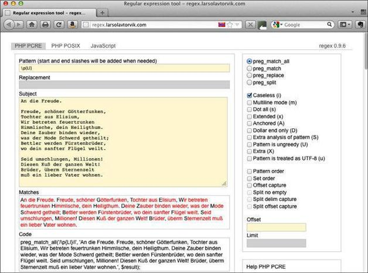

6.3 匹配Unicode字符属性
在某些实现（比如像Perl）中，还可以匹配Unicode的字符属性。这些属性包括字符是否是字母、数字或标点符号。
现在介绍一下ack，这是一个用Perl语言编写的命令行工具，它跟grep功能相似（见http://betterthangrep.com）。系统一般不会附带这个程序，用户需要自己下载并安装。（参见6.6节）。
我们要用ack来处理席勒1785年的作品“An die Freude”的片段（或许你不认识，这是德语）：
An die Freude.
Freude, schöner Götterfunken,
Tochter aus Elisium,
Wir betreten feuertrunken
Himmlische, dein Heiligthum.
Deine Zauber binden wieder,
was der Mode Schwerd getheilt;
Bettler werden Fürstenbrüder,
wo dein sanfter Flügel weilt.
Seid umschlungen, Millionen!
Diesen Kuß der ganzen Welt!
Brüder, überm Sternenzelt
muß ein lieber Vater wohnen.
该片段中有几个有趣的字符，它们不在ASCII的范围内。我们要通过属性来看看这首诗的文本内容。（如果你想知道这段文字的意思，可以将其输入到Google Translate中（http://translate.google.com）。）
在命令行中使用ack时，你可以指定查看那些属性为字母（L）的字符：
ack '\pL' schiller.txt
该命令会将字母都高亮显示。对于小写字母，则要在括号中使用Ll：
ack '\p{Ll}' schiller.txt
括号是必需的。对于大写字母，则是Lu：
ack '\p{Lu}' schiller.txt
要指定不符合某个属性的字符，则使用大写P：
ack '\PL' schiller.txt
这个命令会将非字母字符标亮。
下面的正则表达式用于查找非小写字母：
ack '\P{Ll}' schiller.txt
而这个正则表达式则高亮显示非大写字母：
ack '\P{Lu}' schiller.txt
在另外一个基于浏览器的正则表达式测试程序http://regex.larsolavtorvik.com中也可以这样做。图6-4展示的是使用小写字母属性（\p{Ll}）标亮席勒诗中小写字母的结果。

图6-4 使用小写字母属性标亮字符
表6-2列出了在\p{property}或\P{property}中使用的字符属性名（参见http://www.pcre.org/pcre.txt中的pcresyntax(3)）。还可以用属性对各种人类语言进行匹配，具体参见表A-8。
表6-2 字符属性
| 属性 | 描述 |
|---|---|
| C | 其他字符 |
| Cc | 控制字符 |
| Cf | 格式字符 |
| Cn | 未分配字符 |
| Co | 专用字符 |
| Cs | 替代字符 |
| L | 字母 |
| Ll | 小写字母 |
| Lm | 修饰字母 |
| Lo | 其他字母 |
| Lt | 标题大写字母 |
| Lu | 大写字母 |
| L& | Ll、Lu或者Lt |
| M | 标记符号 |
| Mc | 空格标记 |
| Me | 环绕标记 |
| Mn | 非空格标记 |
| N | 数字 |
| Nd | 十进制数字 |
| Nl | 字母数字 |
| No | 其他数字 |
| P | 标点符号 |
| Pc | 连接标点符 |
| Pd | 破折号 |
| Pe | 结束标点符 |
| Pf | 最终标点符 |
| Pi | 起始标点符 |
| Po | 其他标点符 |
| Ps | 开始标点符 |
| S | 符号 |
| Sc | 货币符号 |
| Sk | 修饰符号 |
| Sm | 数学符号 |
| So | 其他符号 |
| Z | 分隔符 |
| Zl | 行分隔符 |
| Zp | 段落分隔符 |
| Zs | 空格分隔符 |